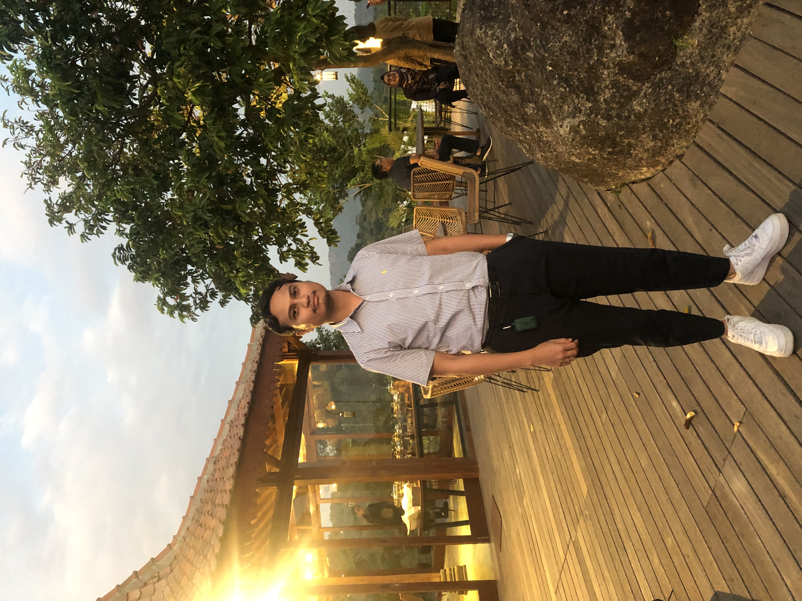

Irham Renaldi Herdian, CSCP

Summary
Certified procurement specialist with 5 years of experience at the largest
telecommunication company in the country. Developed a strong understanding of
procurement processes and strategies, specializing at managed service
procurement of network devices. Able to complete 26 procurement process in
previous year with achieving cost reduction as much as 4,5% on average.
Education
Padjadjaran University
Bandung, Indonesia
Bachelor Degree of Business Administration
September 2012 - November 2016
GPA 3.44 of 4.00
Work Experiences
-
PT Telekomunikasi Indonesia (PERSERO) Tbk.
Procurement Specialist
January 2018 - Present
-
Identifying and selecting suppliers who can provide quality goods and services at the best possible price
-
Developing and implementing procurement strategies that align with the organization's goals and objectives
-
Negotiating with suppliers to obtain the best possible terms and pricing
-
Evaluating supplier performance and addressing any issues that may arise
-
Managing the procurement process from start to finish, including identifying needs and up to awarding
-
Ensuring compliance with organizational policies and procedures as well as applicable regulations
-
Collaborating with cross-functional teams to ensure that procurement activities align with other business
functions
-
PT Telekomunikasi Indonesia (PERSERO) Tbk.
Great People Trainee Program
September - December 2017
-
Participate in on-the-job training to gain knowledge and experience in an assigned position of the company
-
Learn to perform specific tasks and responsibilities related to the job function
-
Attend company training sessions and workshops to enhance both hard skills and soft skills
-
Citibank N.A. Indonesia
CitiGold Acquisition Team
March - June 2017
-
Proactively approach clients to establish real needs, understand the client and their requirements, and interest them in banking products
-
Provide advice and product information to clients as appropriate, outlining features and benefits
-
Build and maintain new and existing customer relationships
-
Perform the necessary processes, procedures and verbal dialogues to effectively customize offers and cross sell
an expansive set of products and services to new and existing customers
-
Achieve or exceed decided sales targets
-
Fulfilling the clients' necessities while providing an exceptional client experience
Skills
- Contract Negotiation
- Contract Management
- Strategic Sourcing
- Microsoft 365
Certifications
-
Certified Supply Chain Professional (CSCP)
Association for Supply Chain Management (ASCM)
Valid thru September 2027
-
Certified Associate in Project Management (CAPM)
Project Management Institute (PMI)
Valid thru February 2025
-
Sertifikat Tingkat Dasar Ahli Pengadaan Barang/Jasa Pemerintah
Lembaga Kebijakan Pengadaan Barang/Jasa Pemerintah (LKPP)
Valid for a lifetime
Training & Courses
List of My Hobbies
Contact Me